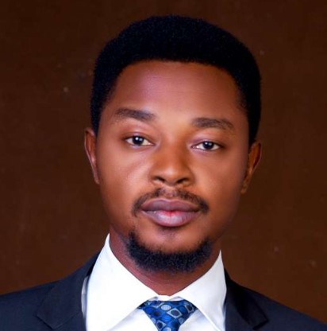

IGENOZA, Nicholas Ofiekhagbo
Austin House, Km 10 Idiroko Rd, Ota, Ogun State
igenozanic@gmail.com | linkedin.com/in/nicholas-ofiekhagbo-igenoza-7508915b | +2348035486960
PROFESSIONAL SUMMARY
A result-driven Network Engineer with a focus on efficiency and performance optimization. Detail-oriented and proactive with strong communication, training, troubleshooting, and analytical abilities. Highly familiar with a wide range of security, engineering, networking, and operating systems software. Expert in monitoring network performance, solving technical issues, updating job knowledge, upgrading/migrating network equipment, ensuring network security, and providing satisfactory customer service.
PROFESSIONAL EXPERIRNCE
SDSD Prestige (Ota, Ogun State) 09/2022 – Present
Academy Director
- Analyzed skill gaps for software development and quality assurance teams to develop training courses on C#, (.NET), ASP.Net Core, and Xamarin.
- Led the adoption of automation testing by the quality assurance team, resulting in a 90% improvement in performance.
- Collaborated with project management and subject matter experts to establish the technical vision and product performance needs.
- Handpicked, recruited, and mentored 10 candidates who transitioned to junior mobile app developer roles.
- Contributed to client portal project development, leading to retention of upwards of $20k in one month.
Oakview Smart Technologies (Abuja, FCT) 02/2020 – 08/2022
Network Engineer
- Migrated and backed up main gateway network devices at the Embassies of Spain, Italy, and Denmark in Abuja.
- Deployed and configured four Linux servers, and several Cisco routers and switches at National Identity Management Commission’s (NIMC) data centre.
- Implemented over 10 large-scale WAN projects and migrations with capacity planning and expert assistance on future growth.
- Conducted site surveys, analyzed more than 30 sites, and proposed/recommended ICT needs.
- Conducted over 25 full site audits including the Nokia office in Abuja.
- Collaborated remotely with over 50 network engineers to bring up sites.